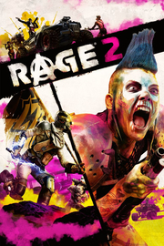

RAGE 2
Detalles
|  | |
| Tiempo de juego | No Jugado |
| Última actividad | Nunca |
| Añadido | 2/11/2025 16:49:24 |
| Modificado | 2/11/2025 17:00:04 |
| Estado de finalización | Not Played |
| Librería | Playnite |
| Fuente | 2TB DATOS |
| Plataforma | PC (Windows) |
| Fecha de lanzamiento | 5/13/2019 |
| Puntuación de la Comunidad | 62 |
| Puntuación de la Crítica | 73 |
| Puntuación de usuario | |
| Género | Acción |
| Desarrollador | Avalanche Studios id Software |
| Editor | Bethesda Softworks |
| Característica | Cloud Saves Compat. Parcial Con Mando Logros De Préstamo Familiar Subtítulos Disponibles Un Jugador |
| Enlaces | Punto de encuentro Discusiones Guías Noticias Página de la tienda PCGamingWiki Logros |
| Tag | Acción Aventura Carreras Ciberpunk Ciencia ficción Combate con vehículos Disparos Divertidos Exploración FPS Multijugador Mundo abierto Posapocalípticos Primera persona Sandbox Sangre Sangriento Simulador de automóviles Un jugador Violentos |
Descripción
Un asteroide ha aniquilado al 80% de la humanidad, y la población cae en picado. Despiadadas bandas sedientas de sangre vagan por las carreteras, y la tiránica Autoridad ansía gobernar a los supervivientes con mano de hierro. Encarnarás a Walker, el último ranger del Yermo que amenaza el poder de la Autoridad. Después de que te arrebaten tu hogar y te den por muerto, te tocará luchar en nombre de la justicia y de la libertad.
Con trepidantes combates entre vehículos, una acción en primera persona demencial y un mundo abierto en el que reina la locura, recorrerás un implacable Yermo en el que lucharás con sádicas bandas para encontrar las herramientas y la tecnología con las que derrocar el opresivo dominio de la Autoridad de una vez por todas.
Reserve RAGE 2 para receber a missão exclusiva Culto do Deus da Morte, uma aventura selvagem que faz Walker ir atrás de um culto de mutantes ensandecidos que passaram a venerar a imagem de Nicholas Raine, o herói do RAGE original. Sobreviva aos esgotos e enfrente hordas de mutantes, incluindo o gigantesco e monstruoso Bruxo de Abadon, para receber a lendária armadura de Raine junto com a nostálgica Pistola de Colono e o novo Monster Truck Mutante.
Con trepidantes combates entre vehículos, una acción en primera persona demencial y un mundo abierto en el que reina la locura, recorrerás un implacable Yermo en el que lucharás con sádicas bandas para encontrar las herramientas y la tecnología con las que derrocar el opresivo dominio de la Autoridad de una vez por todas.
Reserve RAGE 2 para receber a missão exclusiva Culto do Deus da Morte, uma aventura selvagem que faz Walker ir atrás de um culto de mutantes ensandecidos que passaram a venerar a imagem de Nicholas Raine, o herói do RAGE original. Sobreviva aos esgotos e enfrente hordas de mutantes, incluindo o gigantesco e monstruoso Bruxo de Abadon, para receber a lendária armadura de Raine junto com a nostálgica Pistola de Colono e o novo Monster Truck Mutante.
Recursos principais:
- BIENVENIDO AL SHOOTERVERSO
La tradición shooter de id Software y la destreza de Avalanche Studios para desarrollar mundos abiertos se unen en un equipo de ensueño para crear RAGE 2. No es un shooter o un juego de mundo abierto al uso, sino el shooterverso.
- EL YERMO AGUARDA
Viaja libremente por un entorno inmenso y variado en tu lucha contra la Autoridad, y explora desde frondosas selvas y traicioneras ciénagas hasta calurosos desiertos. El Yermo es enorme, y tendrás todo un arsenal a tu disposición para luchar por cada palmo.
- PISA A FONDO
Usa una selección de vehículos adaptados para cruzar el Yermo a toda velocidad, desde monster trucks hasta girocópteros. Si lo ves, podrás pilotarlo.
- EL ÚLTIMO RANGER
Reparte cera con un abanico de armas que podrás mejorar, devastadores poderes de nanotritos y la Sobrecarga, una habilidad para exprimir tus armas hasta límites insospechados.
- FACCIONES Y ENEMIGOS
Lucha contra violentas facciones para controlar el Yermo, cada una con su colección de lunáticos, mutantes y monstruos sedientos de sangre.